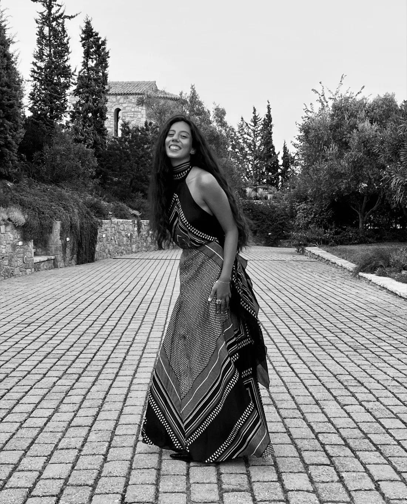

brand strategist and designer
brand strategist and designer
I'm a brand strategist, with design as the way I make it real, sharpening my taste and learning to turn what a brand is really saying into something cohesive and memorable.
I came into design through music, fashion and culture. My music degree at Oxford taught me how much theory and thought sits behind art. My MA at King's then turned that interest into a fascination with what people wear, who people are, and how to really connect with them.
I start by researching who the audience is, who the competition is, and where the gap really sits. Then I write the brief and build the identity and website myself, in Adobe Illustrator and Claude Code. I've built an AI-native workflow, which you can see in my work with ZC Studios, and I push at the line between human creativity and AI automation. The aim isn't to take anything out of the making. It's to give me more time.

Brand strategist first, designer second. Builds sites end to end in Wix and in HTML + JavaScript, then works out what a page is failing to do (a missing call to action, say) and fixes it. King's College London MA, Oxford BA, a good eye for what's right and what's nearly right.
Brand Strategist & Designer
four-restaurant group, West London
Sep 2024 – now
Repositioned The Reach as The Reach Riverside (brief, identity, Wix site). Mapped Mandaloun's journey to booking, found the site had no clear call to action, briefed a menu-led redesign. Brand audits for all four restaurants.
Stylist, Levi's, London
Sep – Dec 2025
Styled a look around one jean and sold out that style in store.
Founder & Creative Director, Zaira Christa (my fashion label)
Sep 2022 – Sep 2024
Two off-schedule LFW shows, a team of six.
King's College London
MA Cultural and Creative Industries, 2025 – 2026
Oxford, Somerville
BA Music, 2:1, 2022 – 25
Side quests
Oxford's first AI fashion catwalk (Oxford Mail covered it).
BEKAA, a hospitality concept from research to financial plan.
A Claude Code + Codex workflow that cuts a week from each project's research.
Wix, HTML, JavaScript, GitHub Pages, Claude Code, Codex
Illustrator, Photoshop, InDesign, Premiere, Canva, PowerPoint
Cultural strategy, brand positioning, creative briefs, customer journeys, ethnography, copywriting
Classical piano • Choi Kwang Do (black belt) • College rowing • Somerville College Choir